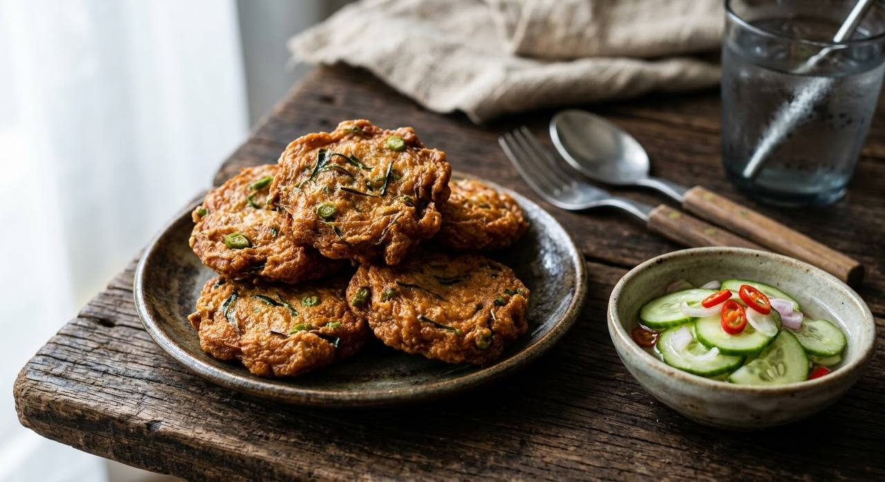

Fish kneaded with red curry paste and kaffir lime until it turns elastic, shaped flat and fried golden. The bounce is the point — and the classic dip is the ajad pickle, not sweet chilli.

ทอดมันปลา means fried fish paste, and the dish lives or dies on texture: the Thai word cooks use is เด้ง — "bounce". The trick is mechanical. The fish is kept ice-cold, worked with iced salted water, then kneaded hard for up to ten minutes until the protein tightens into something springy. A fish cake that doesn't bounce is, by the standard of any Thai kitchen, not finished.
The flavour engine is the same red curry paste that drives แกงเผ็ด — pounded chillies, lemongrass, galangal, kaffir lime zest, shrimp paste — plus hair-thin shavings of kaffir lime leaf and sliced long beans folded through at the end. Egg is the binder in most Thai recipes, one or two of them depending on the cook.
The fish itself is ปลากราย — the featherback, whose flesh is famously elastic. And the dip is its own argument: the classic is ajad, the sharp cucumber pickle, but plenty of market sellers hand over sweet chilli sauce instead. Both exist in Thailand; only one belongs to the dish's older self.
| Thai | English | Amount |
|---|---|---|
| เนื้อปลากรายขูด | Featherback fish — UK substitution in the notes below | 500 g |
| พริกแกงเผ็ด | Red curry paste | 100 g |
| ไข่ไก่ | Eggs | 2 |
| ใบมะกรูด (ซอยฝอย) | Kaffir lime leaves, sliced hair-thin | 5 |
| ถั่วฝักยาว (ซอย) | Long beans, sliced | 1 cup |
| น้ำตาลทราย | Sugar | 2 tsp |
| น้ำปลา | Fish sauce | 2 tbsp |
| น้ำมันพืช | Neutral oil, for deep-frying | 1 litre |
| The ajad (อาจาด) | ||
| น้ำส้มสายชู + น้ำ + น้ำตาล + เกลือ | Rice vinegar, water, sugar, salt — simmered and cooled | as needed |
| แตงกวา · พริกชี้ฟ้าแดง · หอมแดง · ผักชี | Cucumber, red spur chilli, shallots, coriander — sliced | 1 · 1 · 2 · handful |
The dip. The classic ajad pickle (ครัวบ้านพิม calls it the old-fashioned dipping sauce — สูตรโบราณ) against the market habit of sweet chilli (น้ำจิ้มไก่, which is what the Wongnai recipe serves with it). Both are published; the older dish pairs with ajad.
Eggs. Wongnai uses two, ครัวบ้านพิม uses one, and some recipes use none — the binder question. More egg makes a softer, more omelette-like cake.
Basil in the mix. ครัวบ้านพิม folds three cups of holy basil into the paste; most recipes, including Wongnai's, keep it out. Both exist; the basil version leans herbal and green.
Fish sauce. From two tablespoons (Wongnai) down to two-thirds of one (aroifin). The curry paste already carries salt, so the lighter hand is the modern one.
Knead time. Five minutes versus ten. Everyone agrees on the goal — เด้ง, the bounce — and argues about the clock.
The fish. Featherback is the standard, but Thai cooks make ทอดมัน from whatever firm fish is at the market — snakehead, and small river fish in the provinces. The technique travels; the fish does not.
This recipe is translated from the following Thai-language sources. Where they disagree, we've said so.
1. Wongnai (ซีซ่าร์ไม่ชอบกินกล้วย จะเอาลาบแซ่บๆ) — "วิธีทำ ทอดมันปลากราย เมนูทอด" (15 Sep 2021 — full quantities: fish, paste, eggs, kaffir lime, long beans) — wongnai.com
2. ครัวบ้านพิม — "ทอดมันปลากราย พร้อมน้ำจิ้มสูตรโบราณ" (the ice-cold pounding and kneading method, the basil version, and the old-fashioned ajad) — pim.in.th
3. aroifin — "วิธีทำ ทอดมันปลากราย หอมพริกแกง เนื้อปลาเด้ง ไม่อมน้ำมัน!" (27 Jun 2025 — kneading technique and the ajad method) — aroifin.com